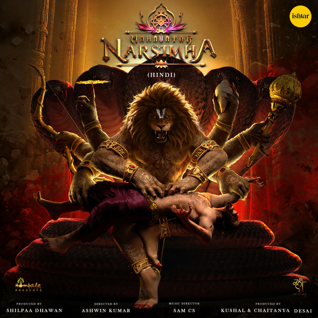
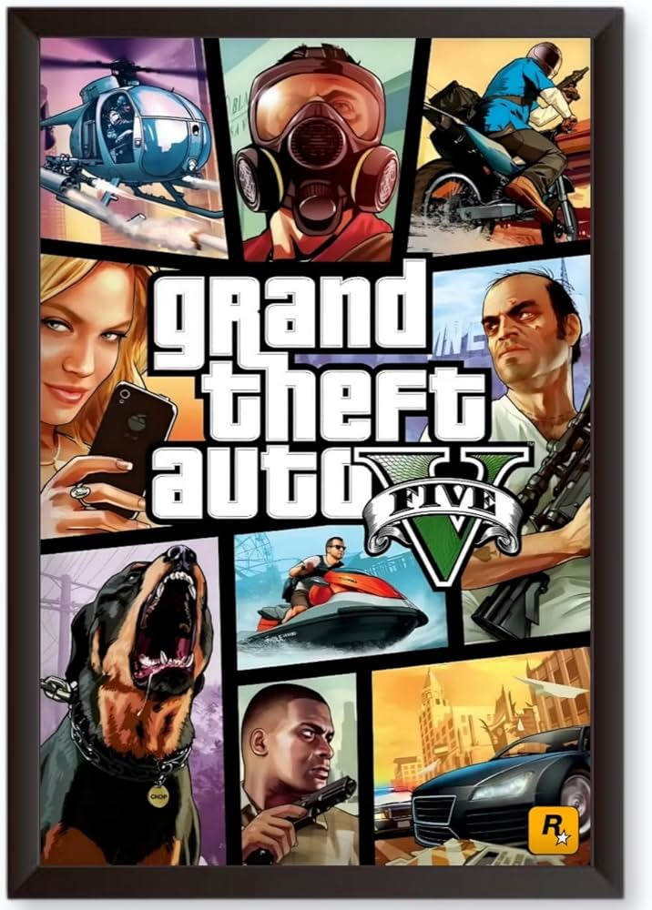
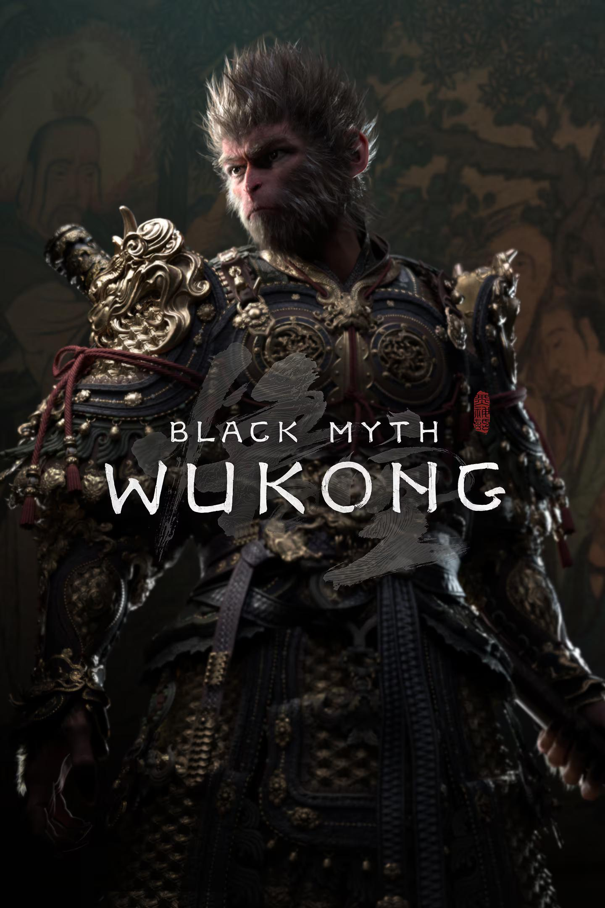

My Favorite Moives & Games
A collection of Moives & Games
Moives |
Games |
About Me
🎬Favorite Moives
- Sivaji: The Boss (2007)

Genre: Action,Drama,Comedy, and Romance.
Director: S. Shankar
I love it: It is my first moive to see in theatre
Favorite Quote: "Rich getting richer, poor getting poorer,"
View on IMDB
- Avatar: The Way of Water (2022)

Genre: Action,Animation,Thriller, and Science fiction.
Director: James Cameronr
Why I love it: It is my first moive to see in theatre in 3D viewing experience and i loved environmentalism, and adventure in the world of Pandora.
Favorite Quote: "Rich getting richer, poor getting poorer,"
View on IMDB
- Mahavatar Narsimha (2024)

Genre: Action, Animation, Drama, and Mythological.
Director: Ashwin Kumar
Why I love it: It is my Mythological moive that i loved the shots and Animation.
Favorite Quote: "O Lord, I do not fear this material existence, for I am absorbed in the nectar of your glories."
View on IMDB
🎮Favorite Games
- Red Dead Redemption II

Author: Dan Houser, Michael Unsworth, and Rupert Humphries.
Pubilshed: In 2018 byRockstar Games.
Genre: Action-adventure, third-person/first-person shooter, and open world Western.
Why I love it: This game taught me about the weight of our choices and the quiet courage, Arthur Morgan’s transformation from a cynical outlaw into a man seeking genuine redemption makes his struggle both heartbreaking and deeply inspiring.
Key Themes:
- Redemption
- The Price of Loyalty
- The Cycle of Violence
- Individualism vs. Civilization
- Grand Theft Auto V

Author: Dan Houser and Rupert Humphries.
Pubilshed: In 2013 by Rockstar Games.
Genre:Action-adventure, third-person/first-person shooter, and open world Western.
Why I love it: This game showed me how different personalities, choices, and past mistakes shape who we become. Playing as Michael, Franklin, and Trevor made me think about loyalty, ambition, and consequences.
Key Themes:
- Corruption and power
- Crime vs. morality
- Friendship and trust
- Loyalty and betrayal
- Black Myth: Wukong

Author: Feng Ji.
Pubilshed: In 2024 by Game Science.
Genre: RPG, Soulslike, fantasy, mythology-based adventure.
Why I love it: This game fascinated me because it explores identity, fate, and what it means to carry a legendary name. As the Destined One, you aren’t just powerful—you’re burdened by expectation.
Key Themes:
- Destiny
- Identity
- Legacy
- Transformation
About This List
Hi! I love powerful stories, whether they come from movies or books. This website is a personal collection of my all-time favorite titles that have stayed with me over the years.
Why These Favorites?
Each movie and book on this list has influenced me in a meaningful way. They’ve made me laugh, cry, see the world differently, or pushed me to grow as a person. These stories left a lasting impression, and I wanted to share them with others.
Want to Recommend Something?
I’m always open to discovering new stories! Feel free to share your recommendations—I’d love to check them out.